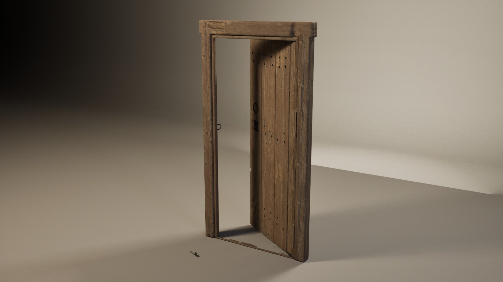
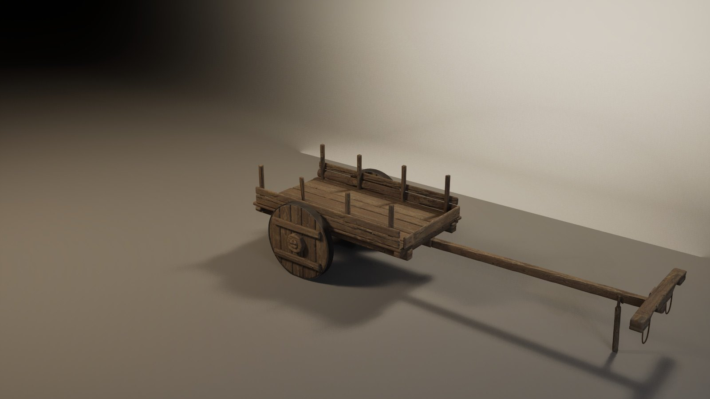
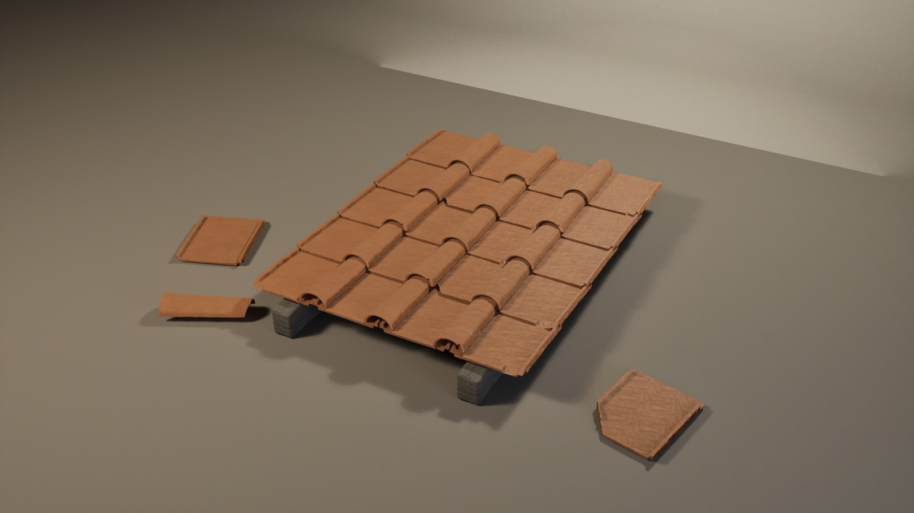
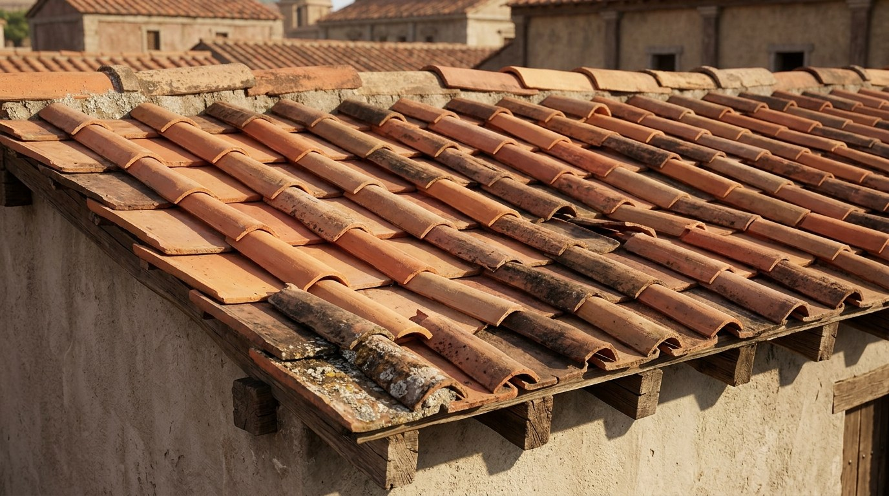
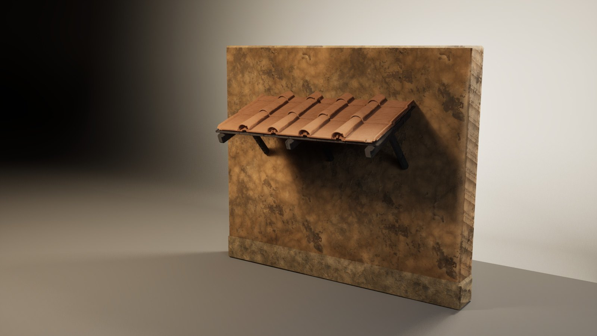
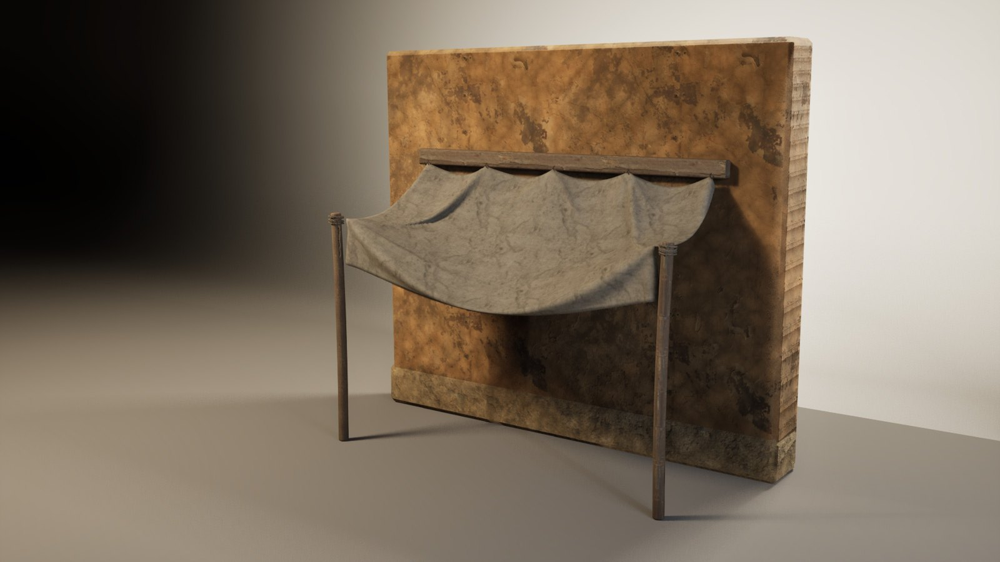
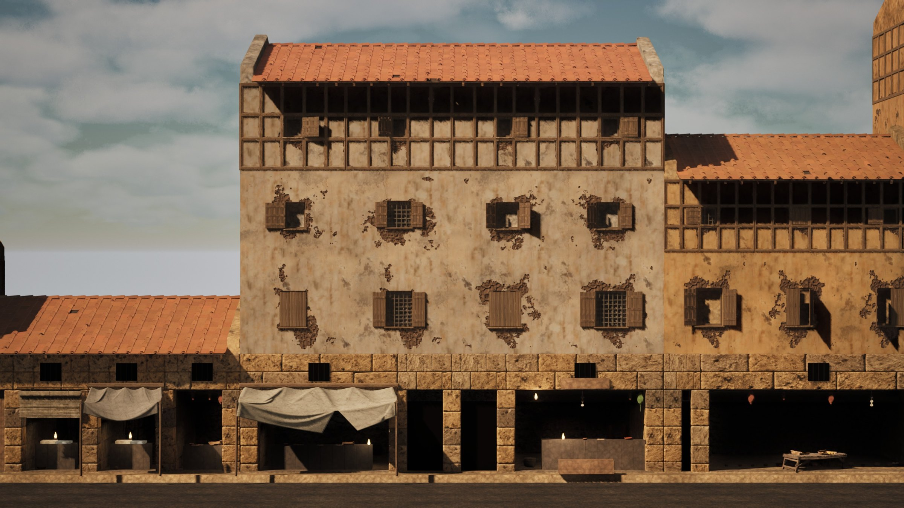
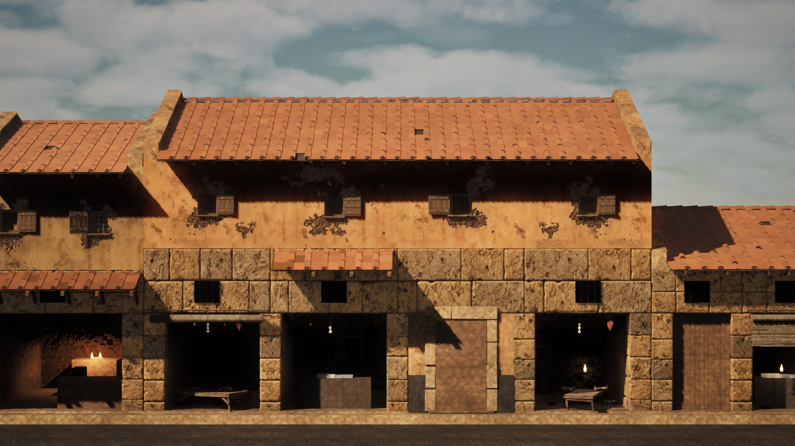
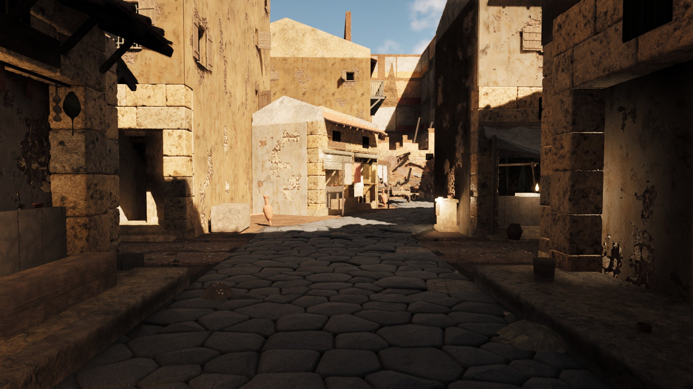
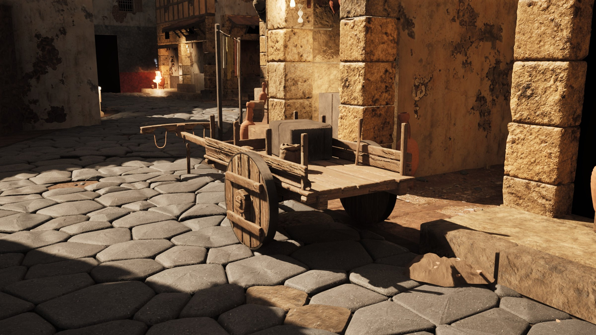

Lavori/Personale
In sviluppo
Coniuratio
Un gioco che sto costruendo da solo, interfaccia compresa. Antica Roma, 63 a.C.: la congiura di Catilina.

L'idea
Coniuratio vuole essere un gioco come Kingdom Come: Deliverance II, ma ambientato nell'antica Roma: nel I secolo a.C., durante la congiura di Catilina del 63 a.C.
Da dove nasce il gioco e cosa vuoi che provi chi lo gioca. Racconta la premessa come la racconteresti a un amico.
Come si gioca
Le meccaniche principali, in poche righe.
- Meccanica 1: cosa fa il giocatore.
- Meccanica 2: cosa lo rende diverso.
- Meccanica 3: come si progredisce.
Mondo e stile
Queste immagini sono strumenti di lavoro. L'idea è un flusso in tre passaggi: un agente storico costruito su Claude controlla lo sviluppo del gioco e mi fornisce i prompt, Gemini genera le immagini di riferimento, poi ambienti e oggetti vengono modellati in Blender.
Ambienti, oggetti e materiali del mondo di gioco.
Dal prompt al modello
La porta
Photorealistic reference photograph of the door of a poor rented room on the third floor of an ancient Roman apartment block (insula), Rome, 63 BC, seen from the dim wooden stair landing, straight-on, eye level, light from a small oil lamp in a wall niche to the left plus faint daylight. The door is about 0.85 m wide and 1.9 m high, a single leaf that opens inward. The leaf: three vertical fir planks of slightly different widths (25-30 cm each, 3 cm thick), simply butted edge to edge with thin gaps of 2-5 mm where a little light shows through, bare grey weathered wood, roughly planed, no paint. Three horizontal rows of large irregular hand-forged iron nail heads (round, slightly domed, 2 cm, hammered by hand, none identical), two or three nails per plank in each row. A plain iron ring for pulling, hanging from a staple. On the side opposite the hinges, at about 1 m height, a rusty rectangular iron plate (7 x 10 cm) fixed with four nails, with an L-shaped key slot; a darker greasy halo of hand grime around the plate, the ring and the edge. The frame: rough oak jambs and lintel, with a stop strip nailed on the landing side that covers the edge of the leaf, so no hinge and no pivot is visible from outside. A worn raised wooden threshold, with a gap of about 1 cm under the leaf. Smoke-darkened wood at the top from the lamp, chipped and worn bottom edge, a few woodworm holes. Around the door, cracked and flaking whitewashed plaster on a rubble wall. Avoid: hinges of any kind, doorknob, lever handle, modern keyhole shape (circle with slot), house number, paint or varnish, raised panels, Z-shaped braces, decorative studs, peephole, glass, medieval or fantasy style.
Now the SAME door seen from inside the room, straight-on, eye level, soft light from a small window on the right. Show: three horizontal battens (12-15 cm wide, 3-4 cm thick) across the inside of the planks, top, middle and bottom; the nail tips coming through the battens, bent over like hooks and hammered flat into the wood (clinched). On the hinge side, a thicker vertical post (scapus) with a rounded edge, ending top and bottom in round iron pivot pins held by iron collars: the bottom pin turns in a small iron cup set into the wooden threshold, the top pin goes up into a hole in the wooden lintel. On the middle batten, a plain rectangular oak lock box (about 28 x 12 x 5 cm) nailed to the door, with a wooden bolt sticking out of its end toward the jamb. Higher up, a simple wooden slide bolt (pessulus) running in two small iron staples. A wooden stick leaning against the wall beside the door (used to prop it shut). Avoid: hinges or strap hinges, screws, a metal box lock, spring latch, doorknob, paint, Z braces, panels.


Il carro
Photorealistic reference image of an ancient Roman two-wheeled work cart (plaustrum), Rome, 63 BC, standing empty on packed earth, three-quarter view from the front left, eye level, soft overcast daylight, plain light-grey studio background, no animals, no people, no text. The cart: a flat bed of rough oak planks about 2.2 m long and 1.2 m wide, with low side boards about 20 cm high and a few vertical wooden stakes; two SOLID disc wheels about 90 cm in diameter and 9 cm thick, each made of three thick wooden planks held by two cross battens, with a smooth plain iron tyre; the wheels are fixed to a thick wooden axle that turns with them inside wooden bearing blocks under the bed; a single straight central wooden pole about 2.8 m long, ending in a simple wooden ox yoke with two neck bows and leather straps. Materials: unpainted oak and elm, sun-bleached grey, cracked and splintered edges, rounded worn corners, dried mud on the wheels, black grease around the axle, frayed hemp ropes coiled on the bed. Avoid: spoked wheels, metal studs or rivets, bolts and nuts, brakes, springs, a turning front axle, a canvas cover, shafts for a horse, horse collar, paint, decorations, medieval or American wagon style.


Le tegole
Photorealistic product reference of two ancient Roman roof tiles from the 1st century BC, isolated on plain light-grey background, soft studio light: 1) a tegula: flat rectangular fired-clay tile about 60 x 45 cm, slightly tapered toward the top, with two raised flanges along the long sides (about 5 cm high), and small cut-outs at the corners of the flanges so tiles can overlap, rough handmade surface, finger marks, uneven orange-red to brownish firing. 2) an imbrex: semi-cylindrical cover tile the same length, tapered (wider at one end), handmade, same clay. Show them side by side, three-quarter view. No glaze, no stamps, no modern curved "coppo" tiles, no interlocking modern tiles.


La tettoia
Photorealistic close view of a low-pitched (about 20 degrees) Roman roof in Rome, 63 BC, afternoon light: rows of flat tegulae with raised flanges, each row overlapping the one below, semi-cylindrical imbrices covering the joints between the flanges, larger imbrices along the ridge; the eaves overhang the wall by about half a meter with wooden rafter ends visible underneath; tiles of slightly different tones, some newer and brighter, a few cracked or displaced, lichen and dirt near the eaves. No gutters, no chimneys, no antefixes, no modern tiles.


La tenda
Photorealistic reference photo of a single ancient Roman shop front (taberna) in a poor street of Rome, 63 BC, late summer afternoon, low warm sunlight from the side, eye level from the opposite side of a narrow street. In front of the wide shop opening hangs a sunshade of coarse undyed linen canvas, about 2.8 m wide and 1.1 m deep: its back edge is tied with short hemp cords to four small iron rings fixed in the stone wall just above the wooden lintel, its two front corners are tied to the tops of two rough wooden poles (8-10 cm thick, about 2.4 m tall) standing on the edge of the raised stone sidewalk. The cloth sags under its own weight: it droops between the rings, and the front edge hangs lower in the middle, with soft natural folds. The canvas is old and used: greyish off-white, sun-bleached in the middle, water stains and faint mildew along the edges, one or two sewn patches of a slightly different fabric with coarse stitches, frayed hems, dust. Hemp cords darkened by dirt. Behind: a tufa-block pier, a dark shop interior with a counter, plaster wall above with peeling patches. Avoid: stripes, bright colours, printed patterns, metal frames, roller or crank mechanisms, folding arms, modern awnings, plastic, signs with text, people.






Interfaccia di gioco
Prime ipotesi per le icone dell'interfaccia.
Come hai progettato HUD, menu e tutorial: quali informazioni servono al giocatore e quando, come lo guidi senza spiegargli tutto.
Se hai fatto provare il gioco ad altre persone, racconta cosa hai cambiato dopo averle osservate.


Diario di sviluppo
- Mese 2026Primo test con cinque persone: riscritto il tutorial.
- Mese 2026Prototipo giocabile del primo livello.
- Mese 2025Stile visivo definito e prime animazioni.
- Mese 2025Idea, documento di design e primi schizzi.
Prossimi passi
Cosa manca e quando pensi di pubblicarlo, anche solo una demo.